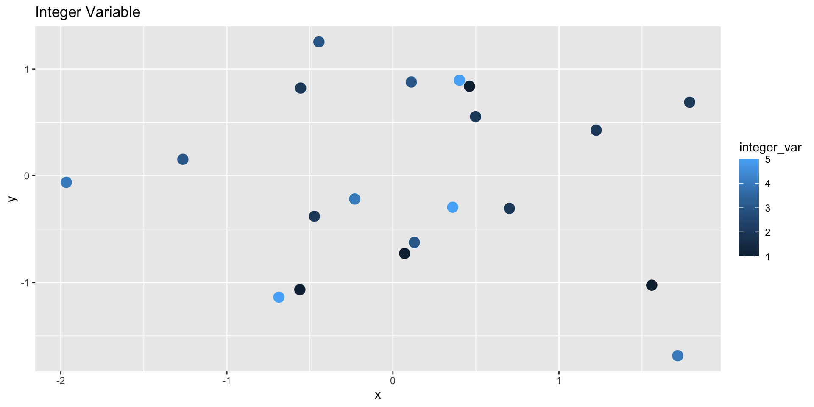
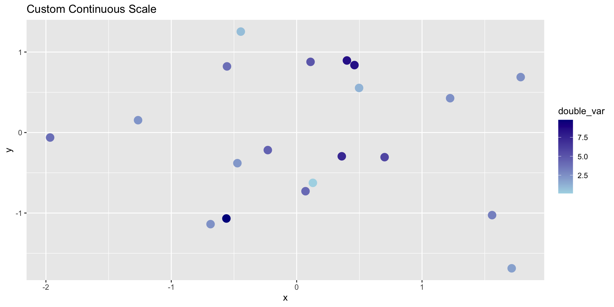

Reading: What Data Shows About Vaccine Supply and Demand in the Most Vulnerable Places
What role does the subtitle of the visuals play? What would you add/remove?
How does the notes enhance your understanding of the visual?
In what ways do the graphs differ? Consider the context, data, subtitles, description, etc.
Brief Lecture: Use of Colors
In addition to color models (and their spaces), another important aspect of color has to do with its actual use when making graphics. Recall that making graphics, conceptually speaking, is basically mapping data to geometric objects and their visual properties.
Use of Colors:
One important property is color. Consequently we need to spend time talking about encoding data with color. To be more precise, by “data” we refer to variables which can be divided into 2 major classes: 1) categorical (qualitative), and 2) quantitative.
Categorical variables, in turn, can be classified into
1. binary
2. nominal
3. ordinal
Quantitative variables can be classified into 1) discrete, and 2) continuous.
Using perceptually uniform color scales in data visualization is important because it ensures that color differences in your data are interpreted consistently and accurately by viewers. A perceptually uniform color scale is one in which: Equal steps in data correspond to equal perceptual differences in color The progression of colors feels smooth and balanced to the human eye across the entire scale. Slide with comparison between “viridis” scale versus “rainbow” scale.
Why It Matters:
Accurate Data Interpretation:
In non-uniform scales (like “rainbow”), some color transitions appear more dramatic than others, even when the underlying data changes linearly.
This can lead viewers to overestimate or underestimate the importance of certain regions in your plot. Example: a heatmap using the rainbow palette might make middle values seem more important simply because they transition through yellow–a perceptually “bright” color.
Why It Matters:
Avoiding Visual Misrepresentation:
Color scales that are not perceptually uniform can distort patterns. Also, they introduce unintended emphasis and can mislead viewers.
Example: In a choropleth map, two regions with only a small difference in values might look drastically different if the color gradient is poorly designed.
Why It Matters:
Inclusivity and Accessibility:
Many perceptually uniform color scales are also:
Colorblind-friendly
Greyscale-printable
Accessible to more viewers, including those with visual impairments
Example: Viridis scale is designed to be uniform, intuitive, and accessible
Coding Activity 1 - Use/Treatment of color with ggplot functions
When you map a variable to the color aesthetic, ggplot automatically chooses colors depending on the data type of that variable:
Data Type
Default Color Behavior
Logical (TRUE/FALSE)
Two colors (discrete)
Integer / Double
Gradient (continuous)
Factor
Discrete palette
Character
Discrete palette
Demo Dataset
Let’s create a small data frame with several variable types.
x y logical_var integer_var double_var factor_var char_var
1 -0.56047565 -1.0678237 FALSE 1 9.7982192 a dog
2 -0.23017749 -0.2179749 FALSE 4 4.3943154 c dog
3 1.55870831 -1.0260044 TRUE 1 3.1170220 c cat
4 0.07050839 -0.7288912 FALSE 1 4.0947495 b bird
5 0.12928774 -0.6250393 FALSE 3 0.1046711 b dog
6 1.71506499 -1.6866933 FALSE 4 1.8384952 b cat
Default Behavior Example
Mapping color to each variable:
# Logical (two-color discrete)ggplot(demo_df, aes(x, y, color = logical_var)) +geom_point(size =4) +labs(title ="Logical Variable")
# Integer (continuous gradient)ggplot(demo_df, aes(x, y, color = integer_var)) +geom_point(size =4) +labs(title ="Integer Variable")

# Factor (discrete palette)ggplot(demo_df, aes(x, y, color = factor_var)) +geom_point(size =4) +labs(title ="Factor Variable")
Activity: Customize the Color Scales
Recreate one of the above plots, but use a color scale function to control the palette.
Experiment with both discrete and continuous color scales.
# Discrete manual colors for factor or character variablesggplot(demo_df, aes(x, y, color = char_var)) +geom_point(size =4) +scale_color_manual(values =c("cat"="orange", "dog"="steelblue", "bird"="forestgreen")) +labs(title ="Custom Discrete Colors")
# Continuous gradient for numeric variableggplot(demo_df, aes(x, y, color = double_var)) +geom_point(size =4) +scale_color_continuous(low ="lightblue", high ="darkblue") +labs(title ="Custom Continuous Scale")

# Using scale_fill_discrete() with filled geomsggplot(demo_df, aes(x = factor_var, fill = char_var)) +geom_bar() +scale_fill_discrete() +labs(title ="Bar Plot with Discrete Fill")
Discussion
What happens when you map a numeric variable to color vs. a factor variable?
How can you control or standardize color use across plots?
When should you manually define colors rather than relying on defaults?
Best Practices
Use sequential color scales for ordered data (low to high values).
Use diverging scales for data centered around a meaningful midpoint (e.g., zero).
Always test color scales in grayscale and/or use simulators for color vision deficiencies.
Prefer palettes like:
scale_fill_viridis_c() or scale_color-viridis() for continuous data.
scale_fill_brewer() with perceptual schemes like “Blues”, “BuPu”, etc.
Activity - Recreating
Article: Data About Covid Vaccine Supply and Demand (NYT)